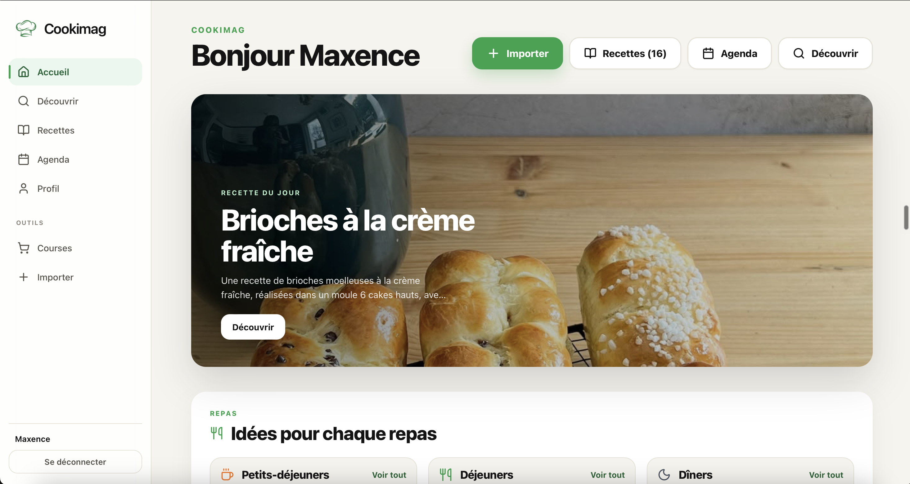
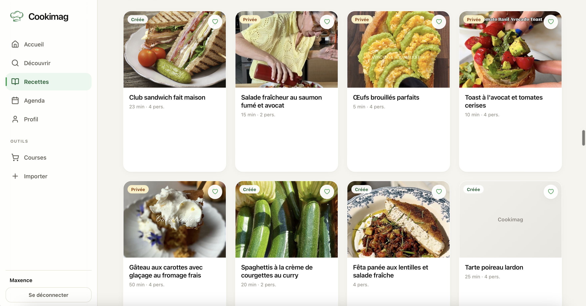
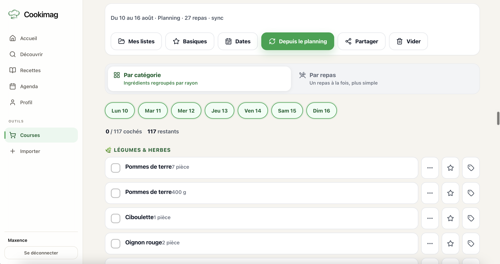

Importe depuis Instagram, TikTok, Pinterest ou n'importe quel site en 1 clic. Organise, planifie tes repas et génère ta liste de courses automatiquement.

📸 Screenshot à ajouter : screens/home.pngPlus besoin de 12 onglets ouverts, de captures d'écran perdues ou de carnets éparpillés. Tout est là.
Depuis Instagram, TikTok, Pinterest, YouTube ou n'importe quel site de recettes. Colle le lien, c'est importé.
Collections, favoris, notes personnelles. Retrouve n'importe quelle recette en quelques secondes.
Petit-déjeuner, déjeuner, dîner, collation. Planifie toute ta semaine depuis l'agenda en quelques clics.
Sélectionne les jours de ton planning, appuie sur un bouton. Ta liste est générée, triée par rayon.
Tu as des courgettes et du feta ? Entre tes ingrédients disponibles, Cookimag te sort toutes les recettes réalisables.
Un compte, partout. Accède à tes recettes sur ton iPhone, Android ou ordinateur, tout est synchronisé en temps réel.

📸 screens/recettes.pngTu sauvegardes des dizaines de recettes sur les réseaux sociaux et tu ne les retrouves jamais. Cookimag les centralise toutes, structurées et consultables en une seconde.

📸 screens/courses.pngPlanifie tes repas de la semaine depuis l'agenda, puis génère ta liste de courses complète en un clic. Plus d'oublis, plus de doublons.
Pas de configuration complexe. Tu ouvres l'app, tu importes ta première recette, tu cuisines.
Gratuit, en 30 secondes. Disponible sur iPhone, Android ou directement sur le web. Même compte partout.
Colle un lien Instagram, TikTok ou de n'importe quel site. Ou colle du texte, un PDF, une photo. Cookimag extrait tout.
Place tes recettes dans l'agenda, génère ta liste de courses et laisse Cookimag gérer le reste.
Depuis le lancement, nos utilisateurs nous envoient leurs retours chaque semaine. Voici ce qu'ils disent.
"J'avais des centaines de recettes sauvegardées sur Instagram que je ne retrouvais jamais. Maintenant elles sont toutes là, organisées, en quelques secondes."
"La liste de courses générée automatiquement depuis mon planning, c'est un game changer. Je n'oublie plus rien au supermarché."
"La fonctionnalité 'ingrédients du frigo' est brillante. Ce soir j'avais des courgettes, du riz et du poulet — l'app m'a sorti 12 recettes directement."
Bien avant les réseaux sociaux, le couscous voyageait déjà de Marrakech à Palerme. Retour sur une épopée culinaire.
La nutritionniste Tania déconstruit les idées reçues sur les protéines végétales et les vrais besoins quotidiens.
Tout ce qui change dans Cookimag ce mois-ci — import, liste de courses, frigo intelligent et disponibilité Android.
Rejoins 10 000 cuisiniers qui ont centralisé toutes leurs recettes sur Cookimag. Gratuit pour commencer.